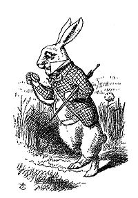
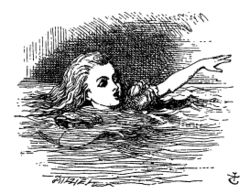
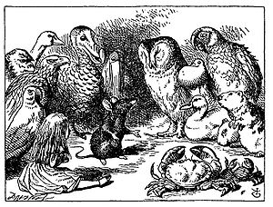
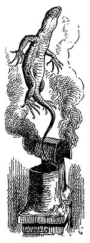

Alice's Adventures in Wonderland
Chapter I DOWN THE RABBIT HOLE
Alice was beginning to get very tired of sitting by her sister on the bank, and of having nothing to do: once or twice she had peeped into the book her sister was reading, but it had no pictures or conversations in it, “and what is the use of a book,” thought Alice, “without pictures or conversations?”
Chapter II the pool of tears
“Curiouser and curiouser!” cried Alice (she was so much surprised, that for the moment she quite forgot how to speak good English). “Now I’m opening out like the largest telescope that ever was! Good-bye, feet!” (for when she looked down at her feet, they seemed to be almost out of sight, they were getting so far off). “Oh, my poor little feet, I wonder who will put on your shoes and stockings for you now, dears? I’m sure I sha’n’t be able! I shall be a great deal too far off to trouble myself about you: you must manage the best way you can—but I must be kind to them,” thought Alice, “or perhaps they wo’n’t walk the way I want to go! Let me see. I’ll give them a new pair of boots every Christmas.”
Chapter III a caucus-race and a long tale
They were indeed a queer-looking party that assembled on the bank—the birds with draggled feathers, the animals with their fur clinging close to them, and all dripping wet, cross, and uncomfortable.
The first question of course was, how to get dry again: they had a consultation about this, and after a few minutes it seemed quite natural to Alice to find herself talking familiarly with them, as if she had known them all her life. Indeed, she had quite a long argument with the Lory, who at last turned sulky, and would only say, “I’m older than you, and must know better.” And this Alice would not allow, without knowing how old it was, and, as the Lory positively refused to tell its age, there was no more to be said.
Chapter IV the rabbit sends in a little bill
It was the White Rabbit, trotting slowly back again, and looking anxiously about as it went, as if it had lost something; and she heard it muttering to itself, “The Duchess! The Duchess! Oh my dear paws! Oh my fur and whiskers! She’ll get me executed, as sure as ferrets are ferrets! Where can I have dropped them, I wonder?” Alice guessed in a moment that it was looking for the fan and the pair of white kid-gloves, and she very good-naturedly began hunting about for them, but they were nowhere to be seen—everything seemed to have changed since her swim in the pool; and the great hall, with the glass table and the little door, had vanished completely.